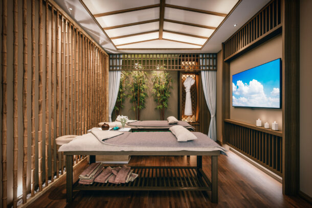

Weekend(3N/4D)
Srinagar Arrival-Srinagar Local Sightseeing Our driver/ representative will pick you up from the Srinagar airport and take you to the Hotel. After refreshment leave for Srinagar local sightseeing, visiting the famous Mughal gardens in Srinagar which are Nishat Bagh (The garden of Pleasure), & Shalimar Bagh (Abode of love). These gardens are situated on the banks of Dal Lake. Nishat Bagh is the larger of the two gardens & has an impressive plantation of Chinar trees on its highest terrace. Both the gardens are built on a symmetrical plan of central waterways with fountains dividing a series of gardened terraces. Visit Botanical Garden & Shankar Acharya temple. Dinner and night stay at the Hotel in Srinagar.
Srinagar – Gulmarg – Srinagar After breakfast, go to Gulmarg, which is a part of the Western Himalayas and is situated on the Pir Panjal Range. The Meadow of Flowers is the nickname for Gulmarg. On the way, you can admire the lovely Tangmarg town before continuing on a scenic 14-kilometer trip to Gulmarg. Beginning a little trip, board the Gondola cable car system (the 08-minute ropeway). After an hour, return to Gulmarg and indulge in some horseback riding. Dinner and overnight stay at the Gulmarg hotel.
Srinagar-Pahalgam-Srinagar We travel to Pahalgam after breakfast.At Khanabal, we leave the NH44 and travel through Anantnag, the second-largest city. From this point on, the highway becomes beautiful as we follow the Lidder River as it flows in the opposite direction. Later, you can travel to several breathtaking locations including Chandanwari, Beetab Valley, and Aru Valley (AT YOUR OWN COST). Later back to Srinagar and check into Houseboat, take 01 hour shikara ride in the famous Dal Lake visiting floating gardens and Meena bazaar. Have dinner and overnight stay at Houseboat.
Srinagar Airport drop Today after breakfast leave for Srinagar airport for onwards destination journey with happy memories.

Paradise(6N/7D)
Srinagar Arrival-Srinagar Local Sightseeing Our driver/ representative will pick you up from the Srinagar airport and take you to the Hotel. After refreshment leave for Srinagar local sightseeing, visiting the famous Mughal gardens in Srinagar which are Nishat Bagh (The garden of Pleasure), & Shalimar Bagh (Abode of love). These gardens are situated on the banks of Dal Lake. Nishat Bagh is the larger of the two gardens & has an impressive plantation of Chinar trees on its highest terrace. Both the gardens are built on a symmetrical plan of central waterways with fountains dividing a series of gardened terraces. Visit Botanical Garden & Shankar Acharya temple. Dinner and night stay at the Hotel in Srinagar.
Srinagar – Gulmarg- Stay at Srinagar After breakfast in the morning, proceed towards Gulmarg, located on the Pir Panjal Range which is the part of the Western Himalayas. Gulmarg is known as the Meadow of Flowers. Enroute you get to see the beautiful Tangmarg town and drive ahead on a scenic drive of 14 kilometers to Gulmarg. Later, begin a short tour, boarding the Gondola cable car system (the 08 minutes ropeway). Descend back to Gulmarg after an hour and later indulge in some horse-riding. At evening return back to Srinagar hotel for dinner and overnight stay.
Srinagar – Sonmarg- Stay at Srinagar After breakfast, drive to Sonmarg. Cross the towns of Kangan, Mammar, Gagangir. Once you reach Sonmarg, take a 3-hour walk or horseback trip to the Thajwas glacier (on your own). Thajwas Glacier is the most prominent attraction of Sonmarg- the Golden Meadow in the picturesque valley of Kashmir. Dinner and night stay at the Hotel in Srinagar.
Srinagar – Dhoodhpatri – SrinagarToday after breakfast Proceed to Doodh-e-pathri is yet another bowl shaped valley about 42 kms from Srinagar. It is a recent discovery in the valley covered with the green carpeted meadows. A flowing river resounds with soft wind passing through the pine trees of the enclosures of the valley. It is also called as a “VALLEY OF MILK” because it produces rich milk in a large quantity. After spending whole day in Dhoodhpatri return back to Srinagar hotel for dinner and overnight stay.
Srinagar – Pahalgam- Stay at Pahalgam After breakfast, we drive to Pahalgam. We switch from the national highway 1A at Khanabal and drive through the second largest city of Anantnag. From here the road turns scenic as we drive parallel on the Lidder River flowing from the opposite direction. Later you can visit many breath-taking places like Beetab Valley, Aru valley & Chandanwari (ON OWN COST). Check in to the Hotel. Dinner and Night Stay at the Hotel in Pahalgam.
Pahalgam Local sightseeing – Srinagar Morning after Breakfast, return back to Srinagar and get directly transferred to houseboat in Dal Lake. Have 01 hour shikara ride in the famous Dal Lake visiting local Meena Bazaar and world famous floating gardens. Have dinner and overnight stay at houseboat.
Departure Today after Breakfast, get transferred to Srinagar Airport for an onward destination journey.

Honeymoon(5N/6D)
Srinagar Arrival-Srinagar Local Sightseeing Our driver/ representative will pick you up from the Srinagar airport and take you to the Hotel. After refreshment leave for Srinagar local sightseeing, visiting the famous Mughal gardens in Srinagar which are Nishat Bagh (The garden of Pleasure), & Shalimar Bagh (Abode of love). These gardens are situated on the banks of Dal Lake. Nishat Bagh is the larger of the two gardens & has an impressive plantation of Chinar trees on its highest terrace. Both the gardens are built on a symmetrical plan of central waterways with fountains dividing a series of gardened terraces. Visit Botanical Garden & Shankar Acharya temple. Dinner and night stay at the Hotel in Srinagar.
Srinagar – Sonamarg- Stay at Srinagar After breakfast, drive to Sonamarg. Cross the towns of Kangan, Mammar, Gagangir. Once you reach Sonamarg, take a 3-hour walk or horseback trip to the Thajwas glacier (If open at that time). Thajwas Glacier is the most prominent attraction of Sonmarg- the Golden Meadow in the picturesque valley of Kashmir. Dinner and night stay at the Hotel in Srinagar.
Srinagar – Gulmarg- Stay at Gulmarg After breakfast in the morning, proceed towards Gulmarg, located on the Pir Panjal Range which is the part of the Western Himalayas. Gulmarg is known as the Meadow of Flowers. Enroute you get to see the beautiful Tangmarg town and drive ahead on a scenic drive of 14 kilometers to Gulmarg. Later, begin a short tour, boarding the Gondola cable car system (the 08 minutes ropeway). Descend back to Gulmarg after an hour and later indulge in some horse-riding. Dinner and night stay at the Hotel in Gulmarg.
Gulmarg– Pahalgam- Stay at Pahalgam After breakfast, we drive to Pahalgam. We switch from the national highway NH44 at Khanabal and drive through the second largest city of Anantnag. From here the road turns scenic as we drive parallel on the Lidder River flowing from the opposite direction. Later you can visit many breath-taking places like Beetab Valley, Aru valley & Chandanwari (ON OWN COST). Check in to the Hotel. Dinner and Night Stay at the Hotel in Pahalgam.
Pahalgam – Srinagar Morning after Breakfast, return back to Srinagar and get directly transferred to houseboat in Dal Lake. Have 01 hour shikara ride in the famous Dal Lake visiting local Meena Bazaar and world famous floating gardens. Have dinner and overnight stay at houseboat.
Departure Today after Breakfast, get transferred to Srinagar Airport for an onward destination journey.

Off Beat(5N/6D)
S Srinagar Arrival – Gurez (stay) Today after arrival at Srinagar Airport meet our representative and begin your trip with majestic Gurez valley. Gurez valley is located in the Himalayas and you reach there through road from Bandipora via Razdan Top. The drive is nothing less than a spectacular experience and you will notice the beauty of nature at its best. Visit Razdan top located at an altitude of 11672 feet. It is famous for its medicinal plant. Razdan Pass is an adrenaline-pumping road in India. From Razdan top you can view the snow-capped Harmukh Peak which is the highest mountain peak of Kashmir. On reaching Gurez, check in to your hotel for an overnight stay.
Gurez Local Sightseeing Today after breakfast leave for local sightseeing of Gurez, You will be visiting a local town known as Dawar. It is famous as an archaeological site. Here you will get to see beautiful log wood houses. The local people of Dawar town are called “Dards”. They are very friendly, you can talk to them and explore more about their local lives. Explore the beautiful natural beauty of the region. This place is nothing less than a dreamland. Just sit and relax around lush green meadows and enjoy the beauty of Mother Nature. You will also visit the majestic Sheikhpura and Chakwali villages. Chakwali village is the last Indian village on the line of control.
Gurez – Srinagar and Dal Lake Visit Today after breakfast leave from Gurez and get transferred to Srinagar, once you reach Srinagar check into the Houseboat, take 01 hour Shikara ride in the famous Dal Lake exploring Meena Bazaar and floating gardens. Have dinner and overnight stay at Houseboat.
Srinagar – Sinthantop – Srinagar Today after breakfast by early morning Proceed for a full day excursion to Daksum and SinthanTop, Sinthan top is the highest pass connecting Kashmir with Jammu via Kishtwar. Daksum swathed in coniferous green forests is trekkers paradise. The curvy uphill drive from Daksum to Sinthan Top is pretty thrilling and adventurous. Sinthan top is popular for the 360 degrees view and year round snow..Dinner and overnight stay at Srinagar.
Srinagar – Dhoodhpatri – Srinagar Today after breakfast Proceed to Doodhpathri is yet another bowl shaped valley about 42 kms from Srinagar. It is a recent discovery in the valley covered with the green carpeted meadows. A flowing river resounds with soft wind passing through the pine trees of the enclosures of the valley. It is also called as a “VALLEY OF MILK” because it produces rich milk in a large quantity. After spending whole day in Dhoodhpatri return back to Srinagar hotel for dinner and overnight stay.
Departure Today after Breakfast, get transferred to Srinagar Airport for an onward destination journey.

All in one(9N/10D)
Srinagar Arrival-Srinagar Local Sightseeing Our driver/ representative will pick you up from the Srinagar airport and take you to the Hotel. After refreshment leave for Srinagar local sightseeing, visiting the famous Mughal gardens in Srinagar which are Nishat Bagh (The garden of Pleasure), & Shalimar Bagh (Abode of love). These gardens are situated on the banks of Dal Lake. Nishat Bagh is the larger of the two gardens & has an impressive plantation of Chinar trees on its highest terrace. Both the gardens are built on a symmetrical plan of central waterways with fountains dividing a series of gardened terraces. Visit Botanical Garden & Shankar Acharya temple. Dinner and night stay at the Hotel in Srinagar.
Srinagar – Dhoodhpatri – Srinagar Today after breakfast Proceed to Doodh-e-pathri is yet another bowl shaped valley about 42 kms from Srinagar. It is a recent discovery in the valley covered with the green carpeted meadows. A flowing river resounds with soft wind passing through the pine trees of the enclosures of the valley. It is also called as a “VALLEY OF MILK” because it produces rich milk in a large quantity. After spending whole day in Dhoodhpatri return back to Srinagar hotel for dinner and overnight stay.
Srinagar – Gulmarg- Stay at Srinagar After breakfast in the morning, proceed towards Gulmarg, located on the Pir Panjal Range which is the part of the Western Himalayas. Gulmarg is known as the Meadow of Flowers. Enroute you get to see the beautiful Tangmarg town and drive ahead on a scenic drive of 14 kilometers to Gulmarg. Later, begin a short tour, boarding the Gondola cable car system (the 08 minutes ropeway). Descend back to Gulmarg after an hour and later indulge in some horse-riding. Dinner and night stay at the Hotel in Gulmarg.
Srinagar – Gurez (stay) After breakfast Begin your day of majestic Gurez valley. Gurez valley is located in the Himalayas and you reach there through road from Bandipora via Razdan Top. The drive is nothing less than a spectacular experience and you will notice the beauty of nature at its best. Visit Razdon top located at an altitude of 11672 feet. It is famous for its medicinal plant. Razdan Pass is an adrenaline-pumping road in India. From Razdan top you can view the snow-capped Harmukh Peak which is the highest mountain peak of Kashmir. On reaching Gurez, check in to your hotel for an overnight stay.
Gurez Local Sightseeing Today after breakfast leave for local sightseeing of Gurez, You will be visiting a local town known as Dawar. It is famous as an archaeological site. Here you will get to see beautiful log wood houses. The local people of Dawar town are called “Dards”. They are very friendly, you can talk to them and explore more about their local lives. Explore the beautiful natural beauty of the region. This place is nothing less than a dreamland. Just sit and relax around lush green meadows and enjoy the beauty of Mother Nature. You will also visit the majestic Sheikhpura and Chakwali villages. Chakwali village is the last Indian village on the line of control.
Gurez – Srinagar Today after breakfast leave from Gurez and get transferred to Srinagar, once you reach Srinagar check into the hotel for dinner and overnight stay.
Srinagar – Sonmarg- Stay at Srinagar Or Old City Tour After breakfast, drive to Sonmarg. Cross the towns of Kangan, Mammar, Gagangir. Once you reach Sonmarg, take a 3-hour walk or horseback trip to the Thajwas glacier (If open at that time). Thajwas Glacier is the most prominent attraction of Sonmarg- the Golden Meadow in the picturesque valley of Kashmir. Dinner and night stay at the Hotel in Srinagar.
Srinagar – Pahalgam- Stay at Pahalgam After breakfast, we drive to Pahalgam. We switch from the national highway 1A at Khanabal and drive through the second largest city of Anantnag. From here the road turns scenic as we drive parallel on the Lidder River flowing from the opposite direction. Later you can visit many breathtaking places like Betaab Valley, Aru valley & Chandanwari (ON OWN COST). Visit Baisaran via ponies. Check in to the Hotel. Dinner and Night Stay at the Hotel in Pahalgam.
Pahalgam Local sightseeing – Srinagar Morning after Breakfast, return back to Srinagar and get directly transferred to houseboat in Dal Lake. Have 01 hour shikara ride in the famous Dal Lake visiting local Meena Bazaar and world famous floating gardens. Have dinner and overnight stay at houseboat.
Departure Today after Breakfast, get transferred to Srinagar Airport for an onward destination journey.